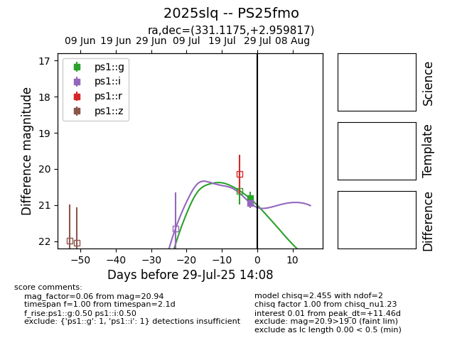

Target 2025slq at 2025-07-29 14:08, see:
TNS: wis-tns.org/object/2025slq
YSE: ziggy.ucolick.org/yse/transient_detail/2025slq
alt names
2025slq (yse,tns)
PS25fmo (panstarrs)
coordinates:
equatorial (ra, dec) = (331.1175,+2.95982)
galactic (l, b) = (63.0520,-39.76453)
photometry
last ps1::g=20.81, ps1::i=20.94
1 ps1::g, 1 ps1::i detections
